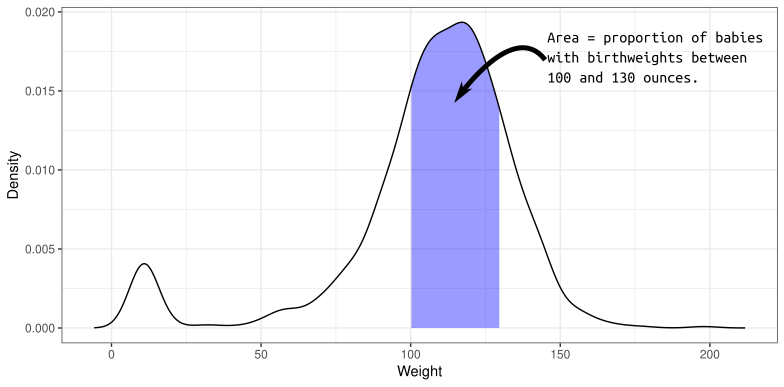
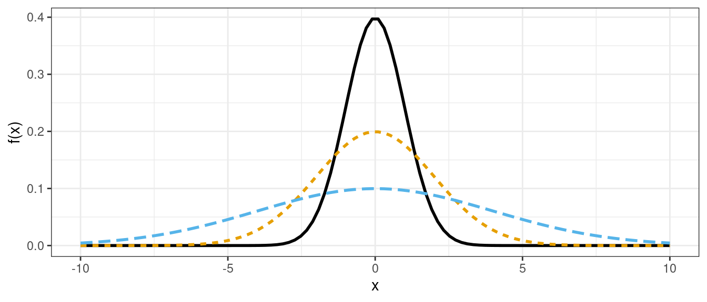
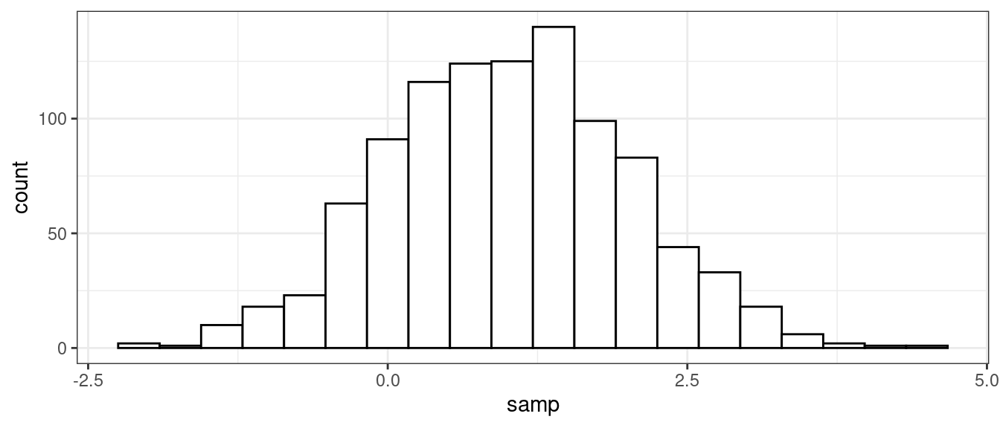
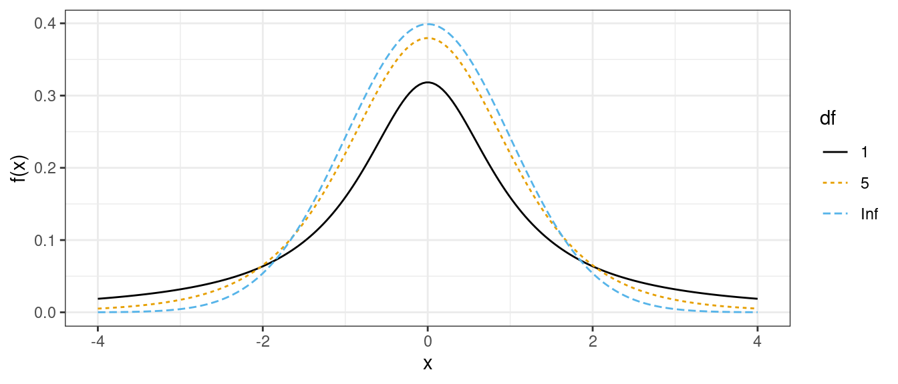

Probability and Simulation
David Gerard
2021-07-28
Learning Objectives
- Basic Probability
- Normal/\(t\)-distributions
- Simulation in R
Probability, the normal and \(t\) distributions.
Distribution: The possible values of a variable and how often it takes those values.
A density describes the distribution of a quantitative variable. You can think of it as approximating a histogram. It is a curve where
- The area under the curve between any two points is approximately the probability of being between those two points.
- The total area under the curve is 1 (something must happen).
- The curve is never negative (can’t have negative probabilities).
The density of birth weights in America:

The distribution of many variables in Statistics approximate the normal distribution.
- If you know the mean and standard deviation of a normal distribution, then you know the whole distribution.
- Larger standard deviation implies more spread out (larger and smaller values are both more likely).
- Mean determines where the data are centered.
Normal densities with different means.
Normal densities with different standard deviations 
Density Function (height of curve, NOT probability of a value).
dnorm(x = 2, mean = 1, sd = 1)## [1] 0.242Random Generation (generate samples from a given normal distribution).
samp <- rnorm(n = 1000, mean = 1, sd = 1) head(samp)## [1] 0.03807 0.70747 1.25879 -0.15213 1.19578 1.03012
Cumulative Distribution Function (probability of being less than or equal to some value).
pnorm(q = 2, mean = 1, sd = 1)## [1] 0.8413Quantile function (find value that has a given the probability of being less than or equal to it).
qnorm(p = 0.8413, mean = 1, sd = 1)## [1] 2
Exercise: Use
rnorm()to generate 10,000 random draws from a normal distribution with mean 5 and standard deviation 2. What proportion are less than 3? Can you think up a way to approximate this proportion using a different function?Exercise: In Hong Kong, human male height is approximately normally distributed with mean 171.5 cm and standard deviation 5.5 cm. What proportion of the Hong Kong population is between 170 cm and 180 cm?
A property of the normal distribution is that if \(X \sim N(\mu, \sigma^2)\) and \(Z = (X - \mu) / \sigma\), then \(Z \sim N(0, 1)\).
Exercise: Use
rnorm()andqqplot()to demonstrate this property. That is, simulate 1000 values of \(X\) with some mean different than 0 and some variance different than 1. Then transform those \(X\) values to \(Z\). Then simulate some other variable \(W\) from \(N(0, 1)\). Useqqplot()to show that \(W\) and \(Z\) follow the same distribution.The \(t\)-distribution shows up a lot in Statistics.
- It is also bell-curved but has “thicker tails” (more extreme observations are more likely).
- It is always centered at 0.
- It only has one parameter, called the “degrees of freedom”, which determines how thick the tails are.
- Smaller degrees of freedom mean thicker tails, larger degrees of freedom means thinner tails.
- If the degrees of freedom is large enough, the \(t\)-distribution is approximately the same as a normal distribution with mean 0 and variance 1.
\(t\)-distributions with different degrees of freedom:

Density, distribution, quantile, and random generation functions also exist for the \(t\)-distribution.
dt() pt() qt() rt()
Simulation as a way of life
Simulation study: Generating random data sets to evaluate properties of the sample.
Simulation is vital in applied statistics for:
- Better understanding of variation in data (humans are naturally bad at this).
- Evaluating the properties of estimators and hypothesis tests across many samples. This is very important for sample size calculations.
- Representing uncertainty in predictions and forecasts.
R functions for simulation:
rnorm(),rt(), etc: Simulate from a specific distribution.rnorm(n = 10, mean = 1, sd = 2)## [1] 1.8836 -1.2785 -0.9457 -3.4263 2.1866 -0.3820 -1.2261 3.6834 -1.5546 ## [10] -0.8367sample(): Obtain a random sample (with or without replacement) from a finite set of predefined values.sample(c("Heads", "Tails", "Edge"), size = 10, replace = TRUE, prob = c(0.45, 0.45, 0.1))## [1] "Heads" "Tails" "Heads" "Edge" "Heads" "Edge" "Tails" "Heads" "Edge" ## [10] "Heads"replicate(): Replicate some code a certain number of times, and collect the output from each replication.replicate(n = 10,expr = { x <- rnorm(10) mean(x) })## [1] -0.01874 -0.01188 0.53837 0.50253 -0.50922 -0.20871 0.21974 -0.72113 ## [9] 0.45390 -0.16443for-loops: A standard way to iteratively apply code.
n <- 10 for (i in 1:n) { ## code goes here, i increases by 1 each iteration print(i) }## [1] 1 ## [1] 2 ## [1] 3 ## [1] 4 ## [1] 5 ## [1] 6 ## [1] 7 ## [1] 8 ## [1] 9 ## [1] 10
Suppose your boss asks you if she should use the mean or the median. She has some trial data, but plans on collecting about 250 new values. She gives you this vector of observed values
x <- c(1.31, 2.42, 1.76, 0.71, 3.07, 0.86, 2.78, 1.26, 2.79, 12.91)Your first thought is to generate from the normal distribution using the estimated mean and standard deviation, and then compare the median to the mean using some metric.
xbar <- mean(x) s <- sd(x) sampsize <- 250 meanvec <- replicate(n = 1000, expr = { xsim <- rnorm(n = sampsize, mean = xbar, sd = s) mean(xsim) }) qplot(meanvec, main = "Mean", bins = 30) + geom_vline(xintercept = xbar, lty = 2, col = 2)
medvec <- replicate(n = 1000, expr = { xsim <- rnorm(n = sampsize, mean = xbar, sd = s) median(xsim) }) qplot(medvec, main = "Median", bins = 30) + geom_vline(xintercept = xbar, lty = 2, col = 2)
They both look to be unbiased. But when you compare the mean squared error, the mean does better (lower mean squared error):
# Mean performance mean((meanvec - xbar)^2)## [1] 0.05054# Median performance mean((medvec - xbar)^2)## [1] 0.07653Which is a performance improvement of 33.9603% in the mean squared error.
This assumes that you are simulating under the normal model. But it is a little iffy on whether the observed data are actually normal.
qplot(x, bins = 10)
qqnorm(x) qqline(x)
You decide to stress-test. What if that single right value is an outlier? Let’s calculate the mean and standard deviation of the 9 values near 0.
xbar <- mean(x[x < 5]) s <- sd(x[x < 5])And let’s simulate from a distribution that is normal 90% of the time and that outlying point 10% of the time.
outval <- max(x) meanvec <- replicate(n = 1000, expr = { outlier <- sample(x = c(TRUE, FALSE), size = sampsize, replace = TRUE, prob = c(0.1, 0.9)) xsim <- rep(NA, length.out = sampsize) for (i in 1:sampsize) { xsim[[i]] <- ifelse(outlier[[i]], outval, rnorm(n = 1, mean = xbar, sd = s)) } mean(xsim) }) medvec <- replicate(n = 1000, expr = { outlier <- sample(x = c(TRUE, FALSE), size = sampsize, replace = TRUE, prob = c(0.1, 0.9)) xsim <- rep(NA, length.out = sampsize) for (i in 1:sampsize) { xsim[[i]] <- ifelse(outlier[[i]], outval, rnorm(n = 1, mean = xbar, sd = s)) } median(xsim) })The median is looking really good now:
xbar## [1] 1.884mean(meanvec)## [1] 2.987mean(medvec)## [1] 2.014So you might state that the median is able to capture the center of the bulk of the observations, even in the presence of a large number of extreme values. This is at a reduced efficiency (if the normal model were correct) of about 30%.
This is an example of using simulation to study the robustness of an estimator to model misspecification. We wouldn’t actually run this for evaluating the mean versus the median, but this type of technique becomes vital for more complicated models.
Exercise: About 48% of US adults are men, and about 52% of US adults are women. The heights of men are approximately normally distributed with mean 69.1 inches and standard deviation 2.9 inches. The heights of women are approximately normally distributed with mean 63.7 inches and standard deviation 2.7 inches. Simulate the heights of a random sample of 1000 adults and plot them.